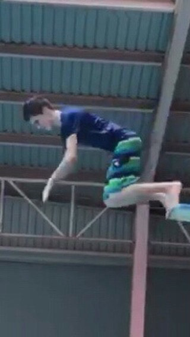
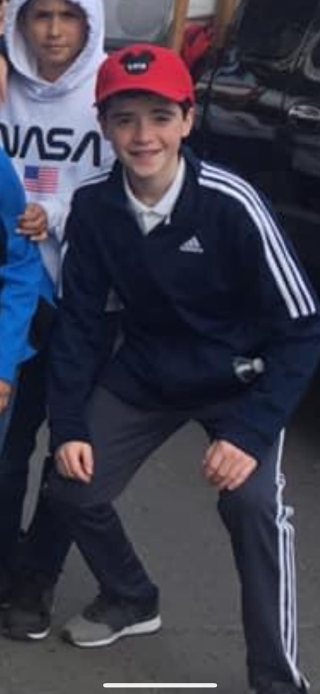

Marco Antonio Alvarez
AKA: Lechez
Edad: 17
Rango: Noob
Nivel de Poder: -1
Marco, célebremente conocido como 'Leches', se erige como uno de los espléndidos bastiones del distinguido círculo del 602. Dotado de un coeficiente intelectual encomiablemente elevado, ha consolidado su estatus como un adversario temible, cosechando tres gloriosas victorias en el renombrado Torneo Sonsos Tourment. Más allá de su imponente presencia en las filas del grupo, deleita sus sentidos con la percusión de la batería en sus momentos de ocio, manifestando así su devota afición por las melodías que emanan del arte sonoro, y, para deleite de sus más cercanos, profesa una devoción inquebrantable hacia el ilustre Luis Miguel.
Leches se distingue como uno de los personajes más peculiares y encantadores dentro del selecto enclave del 602, dotado de una sonrisa resplandeciente que cautiva a quienes tienen el privilegio de contemplarla. Su carisma sin par, una cualidad insólita entre los estudiantes, constituye un activo social invaluable que le permite forjar sólidos lazos con sus más allegados compinches y conquistar la simpatía de nuevos individuos provenientes de otros círculos, erigiéndose así en un ser inmune a cualquier atisbo de discriminación dirigido hacia su persona. Aunque prolifera una multitud de especulaciones acerca de su apariencia, resulta imperioso recordar que Marco Antonio ha sido desde tiempos inmemoriales un pilar indiscutible y altamente respetado en el seno de la distinguida comunidad del 602, contribuyendo de forma inestimable al progreso y cohesión del grupo a lo largo de los años.
Aunque la presencia de Leches ha sido notablemente escasa a lo largo de las últimas temporadas, el rumor sobre su eventual y glorioso retorno para reclamar el codiciado título de macho alfa en los capítulos finales ha avivado intensamente la especulación entre los seguidores. Su enconada rivalidad con Marcelo por el honorífico título de "menos ingenuo del aula" ha sido, sin lugar a dudas, una de las tramas más vibrantes y aclamadas por la ferviente audiencia de la serie. A pesar de su desempeño previo subóptimo, ha surgido una competencia amistosa entre Leches y Marcelo, donde las apuestas giran en torno a quién alcanzará mejores resultados en los exámenes académicos. Hasta la fecha, Leches ha emergido victorioso en los últimos cinco encuentros. Resultará sumamente fascinante observar si podrá mantener su racha victoriosa en los venideros capítulos de la saga.
 602